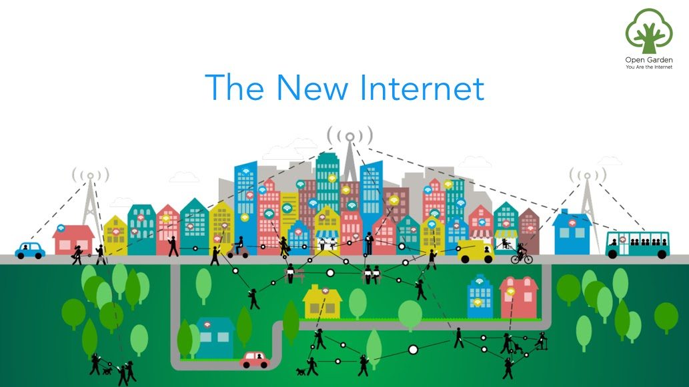
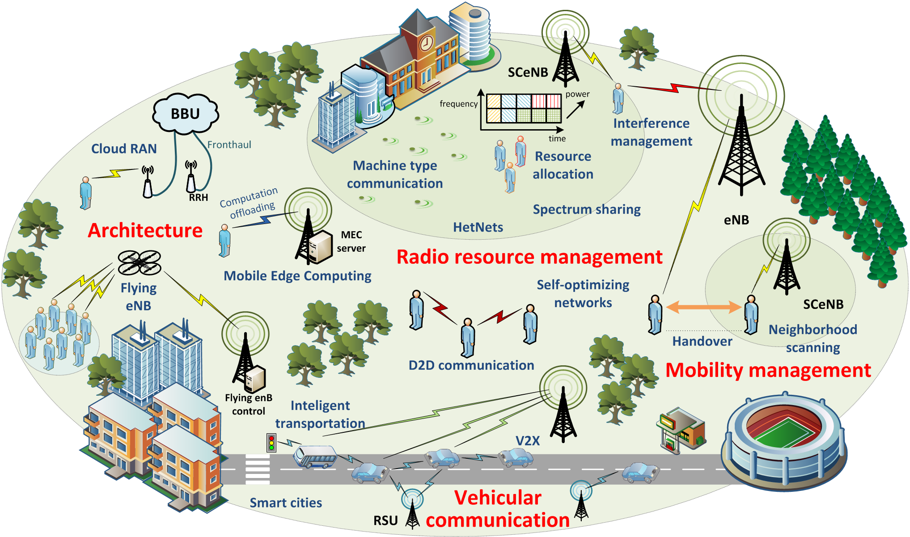
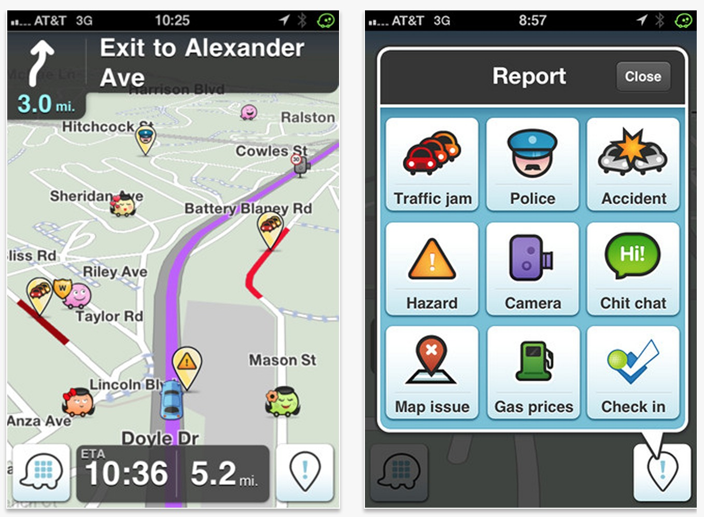

|
Rowan University (267) 251-2698 wangn AT rowan.edu |
|
Research OverviewThe ubiquity of the computing technologies has brought our daily lives with more convenience and fun. Each individual is involved in and connected to the world via a variety of computing devices and services. These devices, possibly to be connected, lead to many contact/computing opportunities. However, conventional networking techniques do not optimize in mobility environments nor take advantage of social phenomena. My research starts with the routing algorithm design in opportunistic mobile networks, such as vehicular networks and opportunistic mobile networks, which try to utilize the opportunistic contact. Later on, I moved to routing and scheduling issues in mobile edge computing, whose objective is to seamlessly merge the increasing mobility demand into existing network infrastructures, resulting in a wide-range of new designs in 5G networks. Along the way, I expanded my interests to address emerging location-aware service optimization in Internet of Things, such as worker recruiting issues in spatial crowdsourcing and trajectory planning in wireless charging. |
|
|  |
Opportunistic Mobile NetworksIt is reported that the estimated number of mobile phone users are 3.3 billion worldwide, which is more than half of the world's population. Most of the mobile phones in the current era are equipped with Wi-Fi, Bluetooth, cameras, sensors, and numerous other components. Moreover, most of the modern vehicles are also installed with communication interfaces and sensory equipment. Such a widespread use and availability of mobile communication devices create a huge number of contact opportunities among humans. Different from traditional Internet routing, which has a standard routing scheme, the routing schemes in opportunistic mobile networks vary from different applications. Therefore, I proposed several different routing schemes to address different applications. |
|  |
Mobile Edge ComputingMobile Edge Computing (MEC) is a new option for network providers challenged to meet consumer demands for improved coverage and greater bandwidth. MEC is a network architecture that enables IT and cloud-computing capabilities at the edge of the cellular network. The main idea behind the architecture is to reduce network congestion and improve applications by performing related processing tasks closer to the end user. The technology is designed to be implemented at cellular base stations, providing rapid deployment of applications and other customer services. |
|  |
Location-aware ServicesWith the ubiquity of mobile devices and vehicles equipped with high-fidelity sensors and the development of wireless networks (e.g., WiFi and LTE) in the past years, all kinds of data become widely available and large in amount. Traditional infrastructure-based computing approaches or systems began to show their limitations, i.e, high system implementation cost, difficult to handle dynamic environment and hard to utilize all kinds of big data to accelerate ubiquitous intelligence in real world. To address the aforementioned two challenges, the spatial crowdsourcing, also called participatory crowdsourcing, has emerged in the past few years. The idea of spatial crowdsourcing is to recruit a set of people/vehicles, called workers, to actively collect and report data by using their mobile devices for a given campaign. |